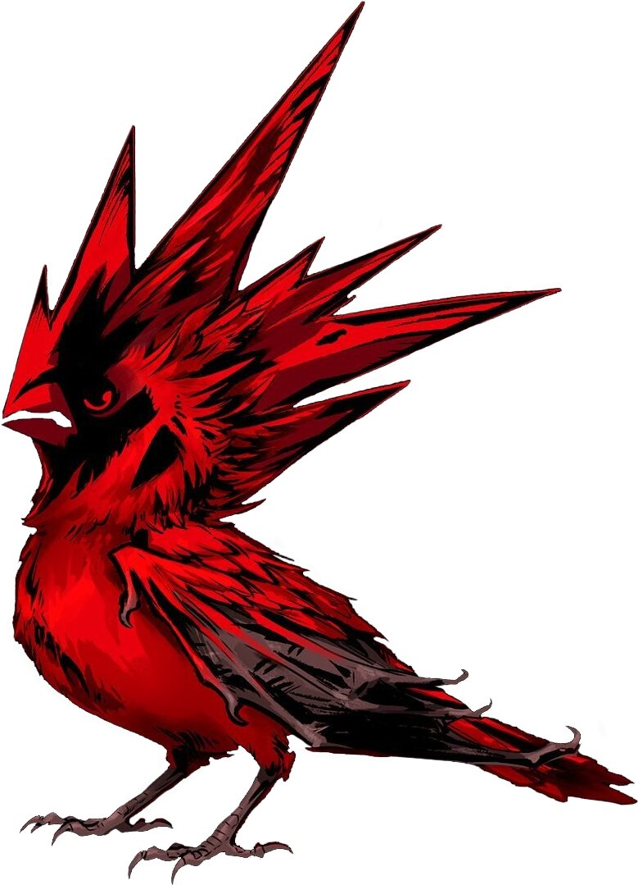

Главная
Мир «Ведьмака» — фэнтэзийная вымышленная вселенная, созданная польским писателем Анджеем Сапковским. Описана в саге о Ведьмаке, состоящей из восьми книг и нескольких отдельных рассказов. Позже вселенная также получила своё развитие в созданных на основе произведений компьютерных играх, сериалах, рок-оперы и т. п.
Цикл о ведьмаке относится к так называемому постмодернистскому фэнтези. Для этого направления характерны натуралистичность и реализм, что разрушает устоявшиеся каноны жанра. Герои Анджея Сапковского не всесильны и не бессмертны, они сталкиваются со множеством трудностей и регулярно оказываются в смертельно опасных ситуациях, что заставляет им сопереживать.
Главным героем серии является Геральт из Ривии, ведьмак — истребитель чудовищ, угрожающих людям. Ещё ребёнком его отдали ведьмакам, которые забрали Геральта в старую крепость Каэр Морхен, где подвергли мутациям, повысившим скорость его реакций, выносливость, сопротивляемость ядам и болезням. Он известен под несколькими прозвищами: Gwynbleidd — "Белый Волк" на Старшем наречии, Белоголовый ведьмак, а также Блавикенский Мясник.
Основная работа Геральта — за деньги уничтожать опасных чудовищ и монстров. Этим ведьмак занимался долгое время, пока в его жизни не появилось нечто действительно важное: маленькая девочка по имени Цирилла. Но в результате интриг королей и магов ведьмак оказывается втянут в эпицентр противостояния Северных королевств и могущественной южной империи Нильфгаард. Геральт пытается спасти от тех и других юную Цири, княжну уничтоженного нильфгаардцами королевства Цинтра.
Каждая фракция, будь то правители нордлингов, император Нильфгаарда или Капитул чародеев, имеет собственные планы на Цири. Ведьмак готов защищать девочку единственно известным ему способом — убийством её недоброжелателей. Ко всему прочему Геральт пытается разобраться в своих неоднозначных отношениях с чародейкой Йеннифэр. Робкие чувства этих двоих могут не выжить, когда на арену выходят пресловутые "государственные интересы" и "высшие цели".
Книги
«Сага о ведьмаке» (польск. Saga o wiedźminie) — цикл книг польского писателя Анджея Сапковского в жанре тёмное фэнтези. В книгах нет четкого разделения на черное и белое, автор лишь поднимает острые вопросы, оставляя место для размышлений и рассматривая ситуации с разных точек зрения. Присутствуют в цикле и любовные линии, и юмор, и сатирические зарисовки на злободневные темы.
Несмотря на то, что действие происходит в вымышленном мире, напоминающем европейское Средневековье, Геральт, Йеннифэр и Цири демонстрируют образ мыслей и поведение, характерное для нашего времени. Этим они вызывают живое сочувствие и интерес со стороны читателей. Проблемы, которые обсуждают герои, существуют и сегодня.
Произведения Сапковского изданы на различных языках: английском, русском, французском, немецком, испанском, финском, литовском и т.д. Первая книга «Ведьмак» (польск. Wiedzmin») была написана в 1986 году, в которой автор и создал своего главного героя — Ведьмака (Геральта из Ривии).
Книги по циклу о Ведьмаке:
-
«Последнее желание»
(польск. Ostatnie życzenie, 1990 год) -
«Меч
Предназначения»
(польск. Miecz przeznaczenia, 1992 год) -
«Кровь эльфов»
(польск. Krew elfów, 1994 год) -
«Час Презрения»
(польск. Czas pogardy, 1996 год) -
«Крещение огнём»
(польск. Chrzest ognia, 1996 год) -
«Башня Ласточки»
(польск. Wieża Jaskółki, 1997 год) -
«Владычица Озера»
(польск. Pani Jeziora, 1998 год) -
«Сезон гроз»
(польск. Sezon burz, 2013 год) -
«Перекрёсток воронов»
(польск. Rozdroże Kruków) (2024)
Также отдельно написаны рассказы «Дорога без возврата» (польск. Droga, z której się nie wraca, 1988) и «Что-то кончается, что-то начинается» (польск. Coś się kończy, coś się zaczyna, 1992), не имеющие прямого отношения к циклу о Ведьмаке, но действие которых разворачивается в той же вселенной.
Игры


CD Projekt RED
- польская компания разработчиков компьютерных игр, которая
занялась разработкой игр по Вселенной Ведьмака. CD Projekt RED
была основана CD Projekt Investment в феврале 2002 года в первую
очередь для разработки игр по мотивам серии романов «Ведьмак»
Анджея Сапковского.
С сентября 2003 года компания начинает работать над своим первым
проектом. На момент основания количество штатных сотрудников
составляло около 10 человек, но во время разработки игры «The
Witcher», на разработку которой было потрачено около $10 млн,
количество сотрудников было постепенно увеличено до 70 человек.
«The
Witcher»
компания выпускает 24 октября 2007 года. Игра была хорошо принята
игроками и 18 октября 2008 года CD Projekt выпускает её
«Дополненное издание».
История компьютерной игры продолжает основную сюжетную линию цикла
романов польского писателя. По необъяснимым причинам Геральт
оказывается жив, но его преследует странное существо. Ведьмак
падает. Закрывая глаза, он видит силуэты знакомых ему людей.
«The Witcher 2: Assassins of Kings»
компания выпускает спустя четыре года, 16 мая 2011 года, продолжая
тем самым историю Геральта. Игра также как и оригинальная игра
получила «Расширенное издание».
Действия игры «The Witcher 2: Assassins of Kings» начинаются
вскоре после событий игры «The Witcher». Геральта обвинили в
убийстве короля Фольтеста и теперь ему предстоит отправиться
расследовать данное преступление и восстановить свою репутацию.
«The
Witcher 3: Wild Hunt»
- заключительная часть, вышедшая 19 мая 2015 года. Проект получил
звание Игры Года, высочайшие оценки и GOTY издание.
В этой части Геральту предстоит встретиться лицом к лицу с Дикой
Охотой - загадочной потусторонней силой, с которой связано
множество легенд. Их появление считается предзнаменованием
несчастья, войны и смерти. Они охотятся за наследницей Старшей
Крови - Цириллой, приёмной дочерью Ведьмака.
«Gwent: The Witcher Card Game»
— компьютерная коллекционная карточная игра по вселенной
«Ведьмак», разработанная CD Projekt RED и распространяемая по
модели free-to-play. Игра вышла 24 мая 2017 г. для всех трех
платформ: PC, PlayStation 4 и Xbox One.
Игра получила положительные отзывы критиков. Рецензенты хвалили
игру за графику и оригинальность механики, однако критиковали за
низкий темп игры.
«Thronebreaker: The
Witcher Tales»
— компьютерная ролевая игра по вселенной «Ведьмак», релиз которой
для Microsoft Windows состоялся 23 октября 2018 года.
Действие игры происходит на фоне Второй войны с Нильфгаардом, то
есть до начала игры «The Witcher» и во времена действия книг
Сапковского. На игрока возлагается задача отбить вторжение и
привести Мэву, королеву Ривии и Лирии, на чьи земли нападает армия
Нильфгаарда, и её народ к победе.
Сериал
«Ведьмак» (англ. «The Witcher») — американо-польский фэнтезийный телесериал, снятый по мотивам одноименной серии романов Анджея Сапковского. Премьера первого сезона состоялась на стриминг-сервисе Netflix 20 декабря 2019 года, премьера второго сезона — 17 декабря 2021 года. В сентябре 2021 года был анонсирован третий сезон, позже началась подготовка к съёмкам четвёртого и пятого сезонов. 25 декабря 2022 года на экраны вышел приквел шоу — сериал «Ведьмак: Происхождение».
Сюжет
В сериале развиваются три сюжетных линии. Литературной основой
одной из них стали отдельные рассказы Анджея Сапковского из
сборников «Последнее желание» и «Меч предназначения».
Ведьмак Геральт из Ривии убивает княжну Ренфри, из-за чего
получает прозвище «Мясник из Блавикена», спасает от гибели Йожа из
Эрленвальда (благодаря этому его «Ребёнком-Неожиданностью»
становится «Львёнок Цинтры» Цирилла), встречает прекрасную
чародейку Йеннифэр из Венгерберга, которая становится любовью всей
его жизни, и барда Лютика.
Сериал рассказывает предысторию Йеннифэр, отсутствующую в книгах:
этот персонаж изображён как горбунья, оказавшаяся на обучении в
чародейской школе в Аретузе и изменившая свою внешность благодаря
чарам.
Параллельно разворачивается сюжетная линия Цириллы, спасающейся
после взятия Цинтры армией Нильфгаарда.
Главные герои
Геральт из Ривии (играет Генри Кавилл) — одинокий охотник на чудовищ, который отчаянно пытается найти место в мире, где люди зачастую оказываются хуже монстров. Имеет множество принципов, которым старается следовать неотступно. Прямолинейный, молчаливый, скрытный, он может показаться грубым при общении. Из-за своего нелюдимого характера, образа жизни и репутации ведьмаков в целом, у Геральта не много близких людей. Тем не менее он отличается гуманизмом, являясь искусным бойцом он скорее постарается избежать ненужной драки, даже если его оскорбляют или провоцируют. Он без страха и сомнений возьмётся за убийство любых монстров, угрожающих жизни простого населения, но ни в коем случае не согласиться по заказу одних людей убивать других людей или разумных существ.
Йеннифэр из Венгерберга (играет Аня Чалотра) — талантливая чародейка, которая родилась в городе Белтейн королевства Аэдирн. Настоящее имя — Янка. Мать девочки – метиска, имеющая эльфские корни. Этот факт давал отцу Янки основания обвинять мать в уродстве девочки – она родилась горбуньей. Когда Янка немного подросла, мать отдала ее в школу магии в Аретузе. В отличии от остальных учениц, Йена не могла показывать никаких способностей к чародейству, что ее сильно расстраивало. Позднее, наконец-то показав свой явный талант к волшебству, Йена получила шанс избавиться от уродства и стала невероятной красавицей, отдав за новую внешность возможность иметь детей.
Цирилла (играет Фрейя Аллан), полное имя Цирилла Фиона Элен Рианнон, также известная, как Zireael (с языка Старшей Речи — Ласточка) — дочь принцессы Паветты и герцога Дани (под этим именем скрывался наследный принц Нильфгаардской Империи Эмгыр вар Эмрейс), внучка королевы Калантэ. Цири любила сбегать из дворца и играть в городе с мальчишками, живо интересовалась военно-политическими обсуждениями бабушки, негодуя из-за того, что в её возрасте бабушка была уже знаменита своими подвигами, а её держат во дворце. Обладает врождённым магическим даром, доставшимся от матери, но никогда специально не обучалась им пользоваться, поскольку проявился он во время трагических событий в Цинтре.